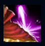
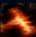
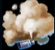
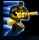
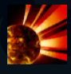

Graves
| Graves The Outlaw | |
|---|---|
| Release date | 19.10.2011 |
| Class | Specialist |
| Positions | Jungle |
| Resource | Mana |
| Range type | Ranged |
| Adaptive type | Physical |
| Base statistics | |||
| Health | 555 – 2119 | Mana | 325 – 1005 |
| Health regen. | 8 – 19.9 |
Mana regen. | 8 – 19.9 |
| Armor | 33 – 90.8 | Attack damage | 64 – 115 |
| Magic resist. | 32 – 53.25 | Crit. damage | 175% |
| Move. speed | 340 | Attack range | 425 |
Malcolm Graves e un renumit mercenar, parior și hoț urmărit de forțele legii în fiecare oraș și imperiu prin care a trecut vreodată. Deși are un temperament vulcanic, respectă și impune cu strictețe codul de onoare al nelegiuiților, folosindu-se deseori de ''Destin'', pușca sa cu două țevi. În ultimii ani, soarta l-a adus iar în calea fostului său partener, Twisted Fate, iar cei doi prosperă din nou împreună în haosul lumii interlope din Bilgewater. |  |
UN NOU DESTIN Pușca lui Graves are niște proprietăți unice. Trebuie să reîncarce atunci când rămâne fără gloanțe. Atacurile lansează 4 gloanțe care nu pot trece prin unități. Non-campionii loviți de mai multe gloanțe sunt proiectați în spate. |
||
|---|---|---|---|---|
 |
CAPĂT DE LINIE Graves lansează un proiectil exploziv care este detonat după 2 secunde sau după 0,2 secunde în cazul în care lovește terenul. |
|||
 |
ECRAN DE FUM Graves lansează o canistră spre zona țintă, creând un nor de fum care reduce raza viziunii campionilor. Inamicii afectați de impactul inițial suferă daune magice, iar viteza de mișcare le este redusă pentru scurt timp. |
|||
|  |
TIR RAPID Graves se năpustește înainte și primește un bonus la armură timp de câteva secunde. Dacă se năpustește spre un campion inamic, primește în schimb două cumuluri de ''Adevăratul curaj''. Când lovește inamicii cu atacuri de bază, reduce timpul de reactivare al acestei abilități și reînnoiește bonusul de rezistență. |
|||
 |
VICTIME COLATERALE Graves lansează un obuz exploziv, provocând daune masive primului campion lovit. După ce lovește un campion sau când ajunge la capătul razei de acțiune, obuzul explodează, provocând daune într-o zonă de con ce pornește de la el. |